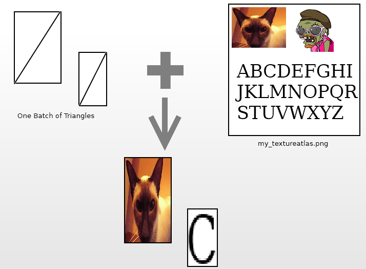

Copyright (c) 2010 Robin Southern Permission is hereby granted, free of charge, to any person obtaining a copy of this software and associated documentation files (the "Software"), to deal in the Software without restriction, including without limitation the rights to use, copy, modify, merge, publish, distribute, sublicense, and/or sell copies of the Software, and to permit persons to whom the Software is furnished to do so, subject to the following conditions: The above copyright notice and this permission notice shall be included in all copies or substantial portions of the Software. THE SOFTWARE IS PROVIDED "AS IS", WITHOUT WARRANTY OF ANY KIND, EXPRESS OR IMPLIED, INCLUDING BUT NOT LIMITED TO THE WARRANTIES OF MERCHANTABILITY, FITNESS FOR A PARTICULAR PURPOSE AND NONINFRINGEMENT. IN NO EVENT SHALL THE AUTHORS OR COPYRIGHT HOLDERS BE LIABLE FOR ANY CLAIM, DAMAGES OR OTHER LIABILITY, WHETHER IN AN ACTION OF CONTRACT, TORT OR OTHERWISE, ARISING FROM, OUT OF OR IN CONNECTION WITH THE SOFTWARE OR THE USE OR OTHER DEALINGS IN THE SOFTWARE.
Gorilla is a C++ based HUD and simple 2D overlay system for the Ogre3D graphics engine, it comes in two files Gorilla.cpp and Gorilla.h
Gorilla is intended to substitute the Ogre overlay system, and to provide a good framework and basis for any Ogre programmer to build their HUD or GUI system upon.
Gorilla is designed for speed; it uses Texture Atlases and tries to render everything in one batch.
To include Gorilla in your project, simply copy the two Gorilla files Gorilla.cpp and Gorilla.h into your project. Making sure you correctly include and link to Ogre. To increase compliation speed you may want to #include "Gorilla.h" in your static headers file.
All of Gorilla's classes are contained in the Gorilla namespace. All classes and member functions use the camelCase notation, with the exception that class names the first letter is always captialised.
To draw onto the Screen, Gorilla creates a number of "Quads" or two triangles that mark a Glyph, Sprite or solid/gradient colour on the screen. These triangles all share the same source image, but reference only portions of that image. This way instead of sending multiple images to your Graphics card at once, only one is needed -- increasing render time and reducing memory usage. This process is colourfully described in the following image:

To know what portions of the image is what, Gorilla uses .gorilla file that gives the precise positions and sizes of the Glyphs and Sprites held within the image. These are simple text files easily editable by any Text Editor.
Typically a Gorilla file will contain the following;
[Texture]
file my_textureatlas.png
rectangle 510 510
[Font]
lineheight 22
spacelength 6
baseline 18
scale 0.999
kerning -0.5
monowidth 15
range 65 66
glyph_65 19 0 17 23 16
glyph_66 36 0 13 23 12
[Sprites]
coco 0 0 48 48
zombie 54 0 48 48